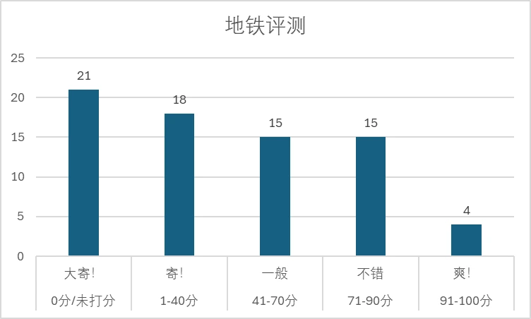

关于符瑶对地铁的评测，最初可以追溯到2021年11月24日。从这一天开始，几乎每天的上班途中，他会通过bilibili动态，从拥挤程度和个人情绪等角度，给他正在乘坐的地铁列车打分。最后一次地铁评测是2022年4月13日，一直到2022年4月18日，符瑶从原来的公司离职，地铁评测系列完结。
挤地铁通勤，可谓是大部分上班族的噩梦时刻。相信对大多数人来说，能够坐上拥有宽敞空间的列车，最好再有个位置坐的话，何尝不是苦逼上班路上的一丝惬意。而我们亲爱的符瑶烤栗子却对此有不同的看法。真正挤地铁的魅力，往往在于那种挤到“只能伸出一只手”、甚至“动不了”的场景里。
站长我统计了符瑶五个月来所有的地铁打分数据，包括分数和评价。符瑶一共进行73次打分，我们将他们分成四个分数段，分别是0分/未打分（大寄！），1-40分（寄！），41-70分（一般），71-90分（不错），91-100分（爽！）。73天共打出“寄”39个，“一般”15个，“不错”15个和“爽！”4个。去掉“大寄”的0分数据后，平均分为55分。
通过对评分与评价的分析，当打出0分，未打分或40以下的低分时，大多是因为睡过头、迟到等原因，这时的列车通常很冷清且空荡。例如2021年12月3日这一天，符瑶评价是：”不挤，为什么，我睡过头了哎嘿，3个闹钟，一个没叫醒我，淦。”并打出0分。而打出91-100分的高分时候，地铁的拥挤程度通常很高，例如2021年12月3日这天，符瑶甚至“动不了，摁门上。”。由此推断，符瑶对拥挤程度有较为特殊的癖好，地铁拥挤程度高时评分反而更高，感受也会越兴奋。
图表总结了符瑶在各个分段的评论关键词、情绪倾向和主要影响因素：
| 分数段 | 关键词 | 情绪倾向 | 主要影响因素 |
|---|---|---|---|
| 大寄！ | 迟到、睡懒觉 | 极度不满、极度抱怨 | 因为过了早高峰所以完全没有打分的意义 | 寄！ | 空荡、冷清 | 消极、空虚 | 空旷空间缺少氛围、状态不好 |
| 一般 | 单手、一手、轻挤、靠门站稳 | 平淡、稍有期待 | 稍微拥挤但没达到理想状态 |
| 不错 | 力气大、略微挤得动不了、靠门 | 积极、满足 | 高拥挤度带来的热闹感 |
| 爽 | 挤得好、动不了、挑战极限 | 极度兴奋、巅峰 | 极端拥挤，挑战生存极限 |
至于为什么地铁越挤评分越高，可能是因为拥挤环境下，氛围更有活力，主观上觉得体验更好。或者如果平时习惯了拥挤的通勤，反而在不拥挤时会觉得不适应、冷清。最重要的是，拥挤到“动不了”、“靠门”这种极限体验，给人带来一种奇特的满足感。
本站是由符导员创建的符瑶Koritsu应援站，属于对符瑶Koritsu形象的二次创作，内容不代表符瑶Koritsu本人立场。符瑶Koritsu的虚拟形象与相关图片的版权归符瑶本人和其他相关创作者所有。
本站遵循CC BY-NC-SA（署名-非商业性使用-相同方式共享）协议。在署名原作者且遵循相同协议的情况下，可以非商业性的使用。
本站由Github Pages + Vercel托管。如果你希望共同参与网站内容的构建和维护，请联系站长@Hechiam无双大丝瓜 。